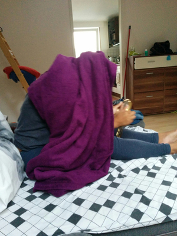
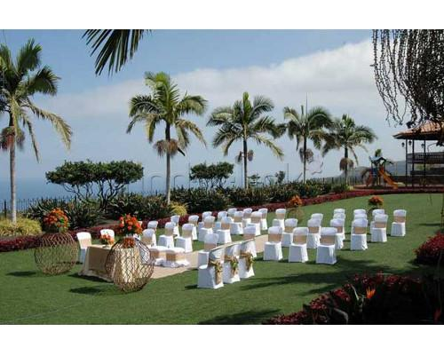
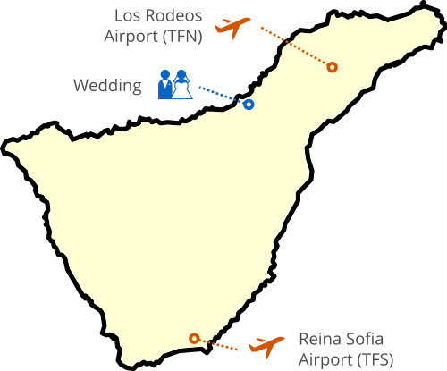
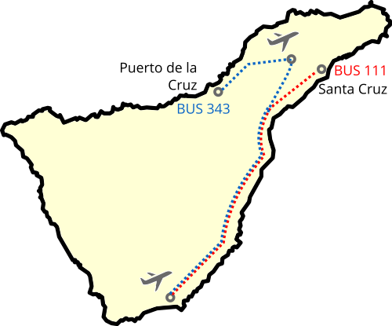

We are doing this, together.
by Janine Lee and Nacho Coloma
Some time ago, a guy met a girl. It was a stupid little thing that got them togetherInvolving a mixture of Abba and some karaoke components. The details are confuse., but they were happy that way. They kept doing stupid for six years and were happy all the way, so decided to sign some papers and make it official.
This is a website to tell you about what is coming, and what to expect.
Meet the bride
This is the bride. To be more exact, this is Meisancita when she cannot identify the sound of the screenshots.
Janine was born in Germany, from Chinese-Malasian parents. She speaks fluently German, Cantonese, English and Spanish. She is always happy, but tends to get sick easily  In health and in sickness. World, meet Meisancita Turtle. . She loves shoes for some reason. I think all women do.
As a child, Janine did some serious ballet and ended up performing with the German Opera. She loves comedy and animation films. She likes dancing like nobody is watching (her husband usually is, but in a romantic-and-absolutely-not-creepy-at-all way).
Every year Janine prepares a photo calendar with the most memorable moments that happened to us: the weddings of three of my siblings, our trip to China, that first time she introduced me to the Lee family. These are the best things coming my way for Christmas, every year.
If you are lucky enough to find someone like that, I would strongly recommend to marry herNot this one, though. This one is mine..
Meet the other guy
Nacho
 We can all agree that she can do better. Just don't let her know that.
is from Tenerife and speaks Spanish, English and like thirty words of German - enough to make him dangerous in a bar. He works with computers all day, and on good days makes them work. He likes sports and reads a lot. He also likes videogames of the kind that rot your brain with adrenaline and leave you useless for the day.
We can all agree that she can do better. Just don't let her know that.
is from Tenerife and speaks Spanish, English and like thirty words of German - enough to make him dangerous in a bar. He works with computers all day, and on good days makes them work. He likes sports and reads a lot. He also likes videogames of the kind that rot your brain with adrenaline and leave you useless for the day.
Nacho always liked cooking, but since he is with Janine they are taking it more seriously (they call it conspiring to create delicious shit), mostly because it's a fun way of spending time together. It's also a scary thing, because delicious shit will make you fat.
Every year Nacho helps organizing an event for 2,000 developers. Somehow, this wedding looks way more scary than all that.
So, there will be a wedding
When and where, exactly?
The wedding will happen on June 11 at Hacienda San Felipe,  A location so filled with beauty that we just can't wait to party hard and puke all over the place. an amazing location in the north of Tenerife. The place has separate zones for the actual wedding, dinner and subsequent party. Its location is somehow tricky to find, which is why we will organize a bus to get there.
The plan
The Spanish thing would be to throw some booze and food together and get some pictures, but here is the German version:
| 12:00 - 12:30 | Arrival of guests |
| 12:30 - 13:15 | Actual wedding |
| 13:15 - 14:15 | Appetizers |
| 14:15 - 14:45 | Photos with friends and family |
| 14:45 - 17:00 | Real food is happening |
| 17:00 - 19:00 | Mojito time |
| 19:00 - 23:30 | Party and open bar (with some extra food) |
| 23:30 | The place closes. |
Hacienda San Felipe closes its doors at 00:00 sharp, Cinderella-style. We may continue the party somewhere else, if anybody is still shouting by then.
Fundamentals
Getting a flight
The wedding will be celebrated in the north of the island. Tenerife has two airports  Airports in Tenerife. Be aware that communications between north and south are not great, because, mountains. , one in the north (Los Rodeos, TFN) and another in the south (Reina Sofia, TFS). If you can choose, try to arrive through the former. If you arrive to the south you will have to get a bus to move to the north, and public transport in the Canary Islands is terrible. Taxis are generally cheap but this is a very long distance, so not really an option.
The best websites to search for flights would be SkyScanner and Google Flights. The cheapest airlines getting to the islands are Norwegian (includes free Internet during the flight), Easyjet and RyanAir. More expensive would be Iberia and Air Berlin.
Be aware that any flight leaving by the south at 6:00 a.m. would mean that you have to book a night in the south, probably in El Medano.
Where to stay
Staying close to the north is recommended, specially if you don't have a car. We are recommending to stay in Puerto de la Cruz, as it's the closest location to the wedding and has plenty of activities nearby. Stay tuned to this page for more, we will post concrete places as we know them.
Be aware that Tenerife has a noticeably unstable weather. Plan for sunny weather, but it could be rainy and reasonably cold in the north(16°C). Basically, weather is like a lottery up there.
If you are interested in joining us in our hotel, that would be Sol Costa Atlantis in Puerto de la Cruz. Please contact Janine to get you a reservation.
Moving around
Public transport between Santa Cruz and La Laguna can be done by tram, which works quite ok. For anything else, you should probably not rely on public transport, since the frequency of buses is terrible. Anyway, these could be your only (realistic) option to move from the airport in the south to the north  Buses connecting the north and the south of the island. Not a straight line because mountains, remember? :
References
This is what others are already saying about our future wedding.
It was amazing... I would never expect to find so many people, so much fun. I will strongly recommend marriage to all my friends.
Gosh, it was like that movie with the tiger. I have a tatoo. Where did I get a tatoo? And what does "papi chulo" even mean?
Bleeergh... baaargh... bhlourgh... fun...
Which is why the wedding will take place in English, though it's not the native language for anybody.
Activities! Fun! Explosions!
| Saturday | Saturday there will be a wedding, remember? Don't add any plans to that, por favor |
| Sunday | Chill out in Puerto de la Cruz, either in the swimming pool of Sol Costa Atlantis Hotel or in Lago Martianez |
| Monday | Let's get that adrenaline pumping up with a trip to Siam Park, ranked waterpark #1 in Europe by TripAdvisor |
Anyway, these details will also be discussed during the wedding, the Spanish way - improvised one or two days before the fact.
Please confirm if you are coming
We would love to have you here, and this is not something that we say lightly. Please let us know if you are coming or not, either way. We understand that not everybody can make it.
Confirm that I am coming Nope, I cannot
Please let us know before March 31, so we can organize. For any questions, please contact either Janine at jleemeisan@gmail.com or Nacho at icoloma@gmail.com.
Wedding gifts
Please don't.
Coming to an island in the middle of the ocean is enough of a gift. Some of you come from the other side of the world, and some are bringing kids (plural!). This is enough of an effort as it is. We wanted to get married, and we want for you to be part of it.
Please remember that we are coming (and will be leaving) by plane, so no gifts and particularly no physical gifts of any size. We appreciate the thought, but just come and have some fun with us.